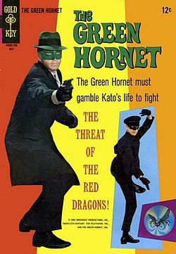

This is a site dedicated to fans of the orignal classic TV show The Green Hornet.

The Green Hornet is a television show on the ABC US television network. It aired for the 1966–1967 TV season, and starred Van Williams as the Green Hornet/Britt Reid and Bruce Lee as Kato. Although it ran for only one season for its production run, the series became a cult favorite after Lee became a major martial arts film star that gave him his first Western media exposure.